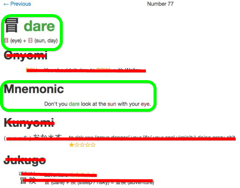

Эффективное изучение иероглифов
Здесь я расскажу, как правильно и эффективно учить иероглифы (и набить себе огромную базу в 1700 кандзи уже за пару-тройку месяцев), почему учить чтения иероглифов вне слов бесполезная трата времени, и почему иероглифы – ваши лучшие друзья и их не нужно бояться.
Как вы уже знаете, иероглифы (или кандзи) используются в японской письменности наряду с хираганой и катаканой для записи корней слов или заимствований из китайского. Так получилось, что письменность пришла в Японию из Китая, и одно время японцы писали исключительно на классическом китайском, а затем начали использовать иероглифы для записи исконно японских слов, для чего они совершенно не предназначались. Как итог, у иероглифов образовалось по нескольку чтений: онные и кунные. Онное чтение используется в заимствованных китайских словах, кунное – в исконно японских. Причем, как онных, так и кунных чтений может быть несколько, а некоторые слова могут читаться нестандартными чтениями в обход обычных.
Но не стоит пугаться. Да, у кандзи в большинстве своем по нескольку чтений. Но! У большинства их всего два – одно онное и одно кунное. Также существуют кандзи, у которых только одно онное чтение, а кунного нет вовсе и наоборот. К тому же, у многих кандзи некоторые чтения уже попросту не используются, т.к. слова, использующие их, устарели и вышли из обихода. Кандзи с большим количеством чтений и/или с нестандартными чтениями почти во всех случаях используются так часто, что хочешь-не хочешь, а запомнишь их быстро. Например, кандзи 日 (солнце/день) имеет два онных чтения – nichi, jitsu, три кунных – ka, hi, bi, и несколько нестандартных. Но посмотрите на значение – этот кандзи является одним из первых по частоте употребления, и используя его, можно написать «день», «солнце», «завтра», «вчера», «Япония».
Также стоит упомянуть, что онные чтения часто подсказываются радикалами-фонетиками: например, практически все кандзи, содержащие в себе 方 (например, 放, 訪 и芳), читаются как hou.
Существует правило, по которому, если вы видите слово, состоящее из нескольких кандзи, оно будет читаться по онному чтению, а если кандзи один и окружен хираганой – кунному. Однако, у этого правила много исключений. Иногда составные слова из нескольких кандзи могут читаться по кунному чтению, либо один иероглиф читается по онному, другой – по кунному и наоборот. Даже хорошо выучив чтения иероглифа, вы часто не будете уверены, как правильно читается слово, содержащее его.
Однако… Вы не думали, что учить чтения отдельно от слов – это большая глупость? Не забывайте, что кандзи используются для записи корней слов. То есть, представьте, что было бы, если бы при изучении английского языка вас заставляли учить корни слов, но не сами слова. Какой смысл учить чтения, если можно учить слова? Ведь, так или иначе, слова вам все равно придется учить, и в составе слов чтения запоминаются куда лучше, так что, изучая чтения кандзи отдельно, вы попросту потратите свое время. Не говоря уже о том, что таким образом вы выучите много бесполезных чтений, которые уже больше не используются на практике.
Да, кто-то может сказать, что, к примеру, в английском мы учим алфавит и сразу же можем начать читать что угодно, а тут придется учить пару тысяч кандзи и только потом получится нормально читать, однако… ведь в английском вы точно так же никогда не можете быть уверены, как читается слово. Один и тот же слог может читаться совершенно по-разному, и вам всегда нужно смотреть транскрипцию. Но вы же не учите варианты произношения каждого слога, а просто учите слова и их произношение, верно? Так почему в случае с кандзи должно быть иначе?
Да, вы можете сказать, что запомнить латинский алфавит, и потом постепенно запоминать, как произносятся английские слова намного легче, чем выучить пару тысяч иероглифов . Только вот в случае с кандзи дело того стоит, потому что они будут давать вам при чтении такие преимущества, о которых вы и не мечтали при чтении текстов на индоевропейских языках.
Во-первых, даже если вы не знаете слово, но знаете значения кандзи, которые используются в этом слове, вы можете предположить, что оно означает. Возьмем все тот же кандзи 日, который означает «день», и возьмем, к примеру, кандзи 半, который означает «половина». Нам попадается слово 半日 – мы не встречали его раньше, но нетрудно догадаться, что оно означает «половина дня».
Во-вторых, вы всегда будете знать, какая перед вами часть речи. Если вы попробуете почитать текст на одной хирагане, это будет каша, в которой очень трудно разобраться, а текст с кандзи читается очень легко, поскольку он словно расставляет для вас подсказки, чтобы читалось быстрее и понятнее. Благодаря кандзи всегда можно определить, какая часть речи стоит перед вами, а омонимы полностью исключаются, поскольку слова, которые произносятся одинаково, пишутся разными кандзи.
В-третьих, полноценный алфавит влечет за собой огромное количество всевозможных слогов, а это огромное количество непохожих друг на друга слов. В японском же многие слова пишутся одними и теми же иероглифами, и куда легче запомнить новое слово с кандзи, которые вы уже встречали, чем какое-то совершенно новое незнакомое английское слово. Аналогия в английском: например, вы знаете слово sun, и знаете слово flower. Вам попалось слово sunflower. Чего стоит вам его запомнить? И таких подобных примеров в японском тысячи!
В японском вам нужно запомнить чуть больше 2000 иероглифов для комфортного чтения. Это число отпугивает, но… Вспомните пример выше. Вы выучиваете около 2000 иероглифов и получаете возможность без особого труда запоминать все слова (потому что они состоят из иероглифов, которые вы выучили), а также догадываться о значении большинства слов, никогда не видя их прежде. Представьте, если бы так было в английском! Вы выучиваете около 2000 слов, а остальные просто строятся из них! А ведь для относительно свободного чтения на английском языке вам нужно будет выучить около 7000-10000 слов, которые в большинстве своем не похожи друг на друга!
Выучив 10 кандзи, вы сможете без труда запомнить 20-30 полезных слов. Выучив 100 – 200-300 и так далее. Но, конечно же, помимо значений кандзи, необходимо знать и их чтения. Но чтения иероглифов очень быстро запоминаются в процессе изучения слов, и их не нужно, и даже вредно учить отдельно от них. К примеру, вы учите слово 本人 (honnin), затем слово 本当 (hontou), затем 本来 (honrai), затем 本場 (honba), и после такого не запомнить, что 本 читается как hon, будет просто нереально. И выходит так, что НИ ОДНО выученное вами составное слово не будет выучено зря, поскольку с каждым новым словом вы лучше запоминаете кандзи и их чтения, и даже если вы выучите редко употребляемое слово, знание кандзи и их чтений из него вам пригодится при изучении других, более распространенных слов. Конечно, имеются еще и исконно японские слова, в которых чтение обычно закреплено только за одним словом, но, во-первых, эти слова составляют всего 35% от всего количества японских слов, а, во-вторых, иероглиф там все равно будет подсказывать значение слова.
Однако, кто-то может сказать, что учить иероглифы очень сложно, ведь они разные и большое количество черт в некоторых кандзи делает их трудно запоминаемыми. И на это я отвечу, что ПРАКТИЧЕСКИ ВСЕ учебники используют совершенно неправильный метод изучения кандзи! Даже сами японцы учат кандзи неправильно, как бы это парадоксально ни звучало! Но обо всем по порядку.
Пока вы еще не имели дело с китайскими иероглифами, вам может показаться, что все они уникальны и отличаются друг от друга. Если бы это действительно было так, то запомнить какую-нибудь тысячу кандзи действительно было бы серьезным вызовом. Однако почти все кандзи состоят из более мелких частей, которые называются «bushu» или «радикалы» — и их всего около 200 штук. Можно считать радикалы неким алфавитом, а кандзи – полноценными словами.
Радикалы делятся на абсолютные и символические. Абсолютные радикалы – например: 1, 2и 3 не имеют собственного значения и никогда не указывают на произношение. Они просто являются частью кандзи, как в 受, 買 или 司 соответственно. Символические радикалы, напротив, имеют значение. К примеру, 4 указывает на то, что этот кандзи как-то связан с болезнью: 痛(боль), 病 (болезнь), 疲 (усталость), 痢 (диарея), 症 (симптом).
Также любые кандзи, даже самые сложные, могут использоваться в других кандзи в качестве радикалов. Например, 監 сам состоит из трех радикалов-частей, но также является радикалом в более сложном кандзи — 鑑.
Кандзи, которые сами по себе и не состоят из более мелких частей, очень мало и обычно они символически подсказывают их значения – например, 日 (солнце) сам по себе похож на солнце, а 木 (дерево) похож на дерево. Еще примеры: 川 (река), 山 (гора), 上 (вверх), 下 (вниз). Эти кандзи также используются в более сложных кандзи в качестве радикалов и часто могут подсказывать их значения, например: 日 (солнце) в 晴 (хорошая погода) или 木 (дерево) в 森 (лес).
Поскольку кандзи сами по себе являются словами, то они, как и в остальных языках, могут создавать составные слова – слова из двух или более кандзи, которые называются «дзюкуго». Например, 黙考 (размышление) – это сочетание кандзи 黙 (тишина) и 考 (думать).
А теперь поговорим о том, как же нам предлагают запоминать кандзи учебники… Вам дают кандзи и слова по частоте употребления и… просто заставляют учить. Смотреть на иероглифы, запоминать их визуально и учить их чтения в отрыве от слов!
У новичков может возникнуть заблуждение, что легкие кандзи используются для частых и повседневных слов, а сложные – наоборот, для редких и малоупотребляемых. Однако зачастую это совсем не так! К примеру, такой сложный кандзи как 鼻 означает «нос», а 斤 — азиатская мера веса «кин», которая уже не используется вовсе.
Вот и получается, что человек только начал учить японский и учит нужные и распространенные слова вроде 館 («здание»). Год спустя он выучивает гораздо реже употребляемое 官 («чиновник»), которое является частью 館, и подумает, а почему его сначала не научили кандзи 官, ведь тогда запомнить 館 было бы гораздо легче, и… действительно, почему?
Представим еще один пример. Кто-то учит слово 鳴 (щебетать). Оно состоит из кандзи 口 (рот) и 鳥 (птица). Если человек знает кандзи 口 и 鳥, он быстро запомнит кандзи 鳴, но что если человек не знает кандзи 鳥? Ему придется мучиться и пытаться запомнить кандзи визуально, когда как радикалы в нем подсказывают его значение. Таким образом, какая-нибудь громадина вроде 露 на деле раскладывается на 雨, 足 и 各, и легко запоминается по частям.
То есть, то же самое было бы, если бы вас заставили учить слова, когда вы выучили всего несколько букв алфавита. Радикалы – это буквы, кандзи – это слова, и когда вас заставляют учить кандзи, значение радикалов в которых вы не знаете, вы все равно что учите слова не зная алфавита.
И тут мы подходим к единственному эффективному методу обучения кандзи, который называется KanjiDamage. KanjiDamage выстраивает кандзи для изучения в таком порядке, когда сначала изучаются радикалы, потом кандзи, состоящие из этих радикалов, а потом более сложные кандзи, состоящие из выученных кандзи ранее.
При этом стоит отметить, что абсолютным радикалам для более лучшего запоминания даются названия. К примеру, если вы покажете японцу кандзи 暖, он скажет, что в нем только один радикал – солнце (日), а у штуки справа попросту нет названия. Но KanjiDamage даст его вам. К примеру, КД, прежде чем дать вам для изучения 暖, сначала покажет 日 (солнце).
Затем покажет абсолютный радикал 1, у которого нет своего значения, но ему присвоено значение «гнездо».
Далее вы выучиваете кандзи 友(друг).
Затем вам показывают комбинацию из 友(друг) и 1(гнездо) — 5, которая сама по себе ничего не значит, но здесь ей присвоено значение «ворона» (подсказка для запоминания: «вороны(5) живут в одном гнезде(1), значит они друзья (友)»
Далее, вам показывают кандзи 暖 (теплый), которое состоит из 日 (солнце) и 5 (ворона) с подсказкой «воронам (5) тепло (暖) на солнце (日)».
Легко? Да легче некуда!
На самом деле, многие кандзи набором радикалов могут буквально показывать значение слова, например: 諍 (спор) = 言 (слово) + 争 (бороться), или 吠 (лаять) = 口 (рот) + 犬 (собака), однако часто расположение радикалов в кандзи совершенно не отражает его значение. Например, кандзи 晩 (ночь) состоит из радикалов 日 (день) и 免 (лицензия). Такое произошло из-за того, что кандзи со временем менялись и упрощались, постепенно утрачивая свой первозданный вид. Например, устаревший кандзи 國 (страна), имеет в центре радикал 域 (территория), а новая версия 国 вместо него имеет 玉 (шар, сокровище). Это было сделано для упрощения письма, поскольку в 国 меньше черт, чем в 國.
Однако даже если радикалы в кандзи ничего не говорят о его значении, можно придумать эффективную подсказку для запоминания, например: 国 (страна) – это сокровище (玉), обнесенное с четырех сторон стенами 口. И такие подсказки уже заготовлены в КД для каждого кандзи, а если вдруг заготовленная не понравится – всегда можно придумать свою, ведь к тому моменту, когда вам покажут кандзи, вы уже будете знать, из чего он состоит и придумать подсказку самому не составит труда! Нужно ли говорить, что кандзи так запоминаются на раз-два?
Некоторые кандзи очень сильно похожи друг на друга. Их не очень много, но они есть. Например, 徹, 轍, 撤 и 微. Я очень часто их путал в свое время, но после прохождения КД стал гораздо лучше их различать благодаря тому, что я знаю, из чего они построены и помню подсказку к каждому иероглифу.
екоторые кандзи просто очень редкие для того, чтобы запомниться надолго. Однако благодаря KanjiDamage можно быстро запомнить очень редкий кандзи один раз и на всю жизнь благодаря хорошей подсказке для запоминания. К примеру, я так запомнил 肺 (легкие) и ни разу не забыл.
Изучая кандзи с помощью метода KanjiDamage, вы будете очень хорошо запоминать иероглифы, станете гораздо быстрее читать.
У KanjiDamage есть официальная колода для Anki, с помощью которого я и советую вам изучать кандзи. На прохождение колоды KanjiDamage в среднем уйдет всего 3-4 месяца по 30-40 минут (под конец может дойти до часа) в день.
KanjiDamage+ — улучшенная колода KanjiDamage, содержащая ~1900 кандзи (против ~1700 в обычной) и более удачную мнемонику.
Прежде чем использовать колоду, удалите дублирующиеся карточки: добавьте колоду в приложение для компьютера, зайдите в меню Tools, выберите «Manage Note Types…», затем KanjiDamage, а потом нажмите на кнопку «Cards..». Вверху будут две вкладки: закройте ту, которая называется «Read».
Также вы можете удалить ненужный порядок написания иероглифов: зайдите в меню Tools, выберите»Manage Note Types…», затем KanjiDamage, а потом нажмите на кнопку «Fields..». Выберите «Stroke order» и нажмите «Delete». Затем в меню Tools выберите «Check Media…» и затем «Delete Unused». Синхронизируйтесь со своим аккаунтом, и колода также станет доступна и в приложении для телефона. В каждой карточке довольно много информации, но учить нужно только значение кандзи и подсказку Mnemonic (без чтений, слов и всего прочего, как показано на картинке ниже). Все остальное на данном этапе совершенно не нужно.Таким образом, вы выучите значения около 1700 (1900) кандзи и будете знать, из чего они состоят благодаря подсказкам.
Что хотелось бы посоветовать напоследок: если вы очень хорошо знаете определенные карточки, смело удаляйте их из колоды. Многие кандзи при чтении будут вам встречаться так часто, что забыть их будет попросту нереально. Помните, что легкие карточки будут со временем накапливаться и все чаще показываться при повторении, и соответственно будет увеличиваться и время, которое нужно будет затратить на повторение. Но ведь лучше потратить это время на изучение чего-то сложного, а не того, что вы и так прекрасно знаете, не так ли? Поэтому не щадите легкие карточки. Не тратьте свое время попусту.
Таким образом, вы выучите значения около 1700 (1900) кандзи и будете знать, из чего они состоят благодаря подсказкам.
Что хотелось бы посоветовать напоследок: если вы очень хорошо знаете определенные карточки, смело удаляйте их из колоды. Многие кандзи при чтении будут вам встречаться так часто, что забыть их будет попросту нереально. Помните, что легкие карточки будут со временем накапливаться и все чаще показываться при повторении, и соответственно будет увеличиваться и время, которое нужно будет затратить на повторение. Но ведь лучше потратить это время на изучение чего-то сложного, а не того, что вы и так прекрасно знаете, не так ли? Поэтому не щадите легкие карточки. Не тратьте свое время попусту.